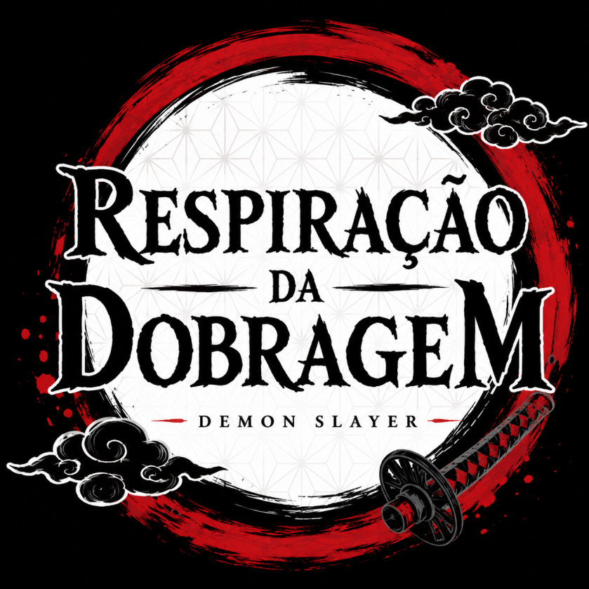

O que é a Respiração da Dobragem?
Dar voz às histórias que nos inspiram 🎙️🇵🇹.

Elenco atual
🎭 Protagonistas
Tanjiro Kamado - @ᏦᎥᏦᎧ🗯
Nezuko Kamado
Zenitsu Agatsuma - @AsFofinhas
Inosuke Hashibira - @Foice defeituosa
Kanao Tsuyuri
Genya Shinazugawa - @Foice defeituosa
⚔️ Hashira
Giyu Tomioka
Shinobu Kocho - @🦴.•.Ozzie.•.🦴
Kyojuro Rengoku @Tigas
Tengen Uzui - @Dobrador da Tuga
Mitsuri Kanroji - @＊*•✩•*˚𝑀𝑜𝑜𝑛˚*•✩•*˚
Muichiro Tokito
Gyomei Himejima
Sanemi Shinazugawa - @VIPanda
Obanai Iguro - @Foice defeituosa
🏠 Família Ubuyashiki
Kagaya Ubuyashiki @Compal
Amane Ubuyashiki
Kiriya Ubuyashiki
Kiriya Ubuyashiki
Hinaki Ubuyashiki
Nichika Ubuyashiki
Kuina Ubuyashiki
🦋 Mansão Borboleta
Aoi Kanzaki
Kiyo Terauchi
Naho Takada
Sumi Nakahara
Goto
Kanae Kocho
🔥 Família Rengoku
Shinjuro Rengoku
Senjuro Rengoku
Ruka Rengoku
🗡️ Mestres e Aliados
Sakonji Urokodaki
Jigoro Kuwajima
Sabito - @Compal
Makomo
Hotaru Haganezuka
Kozo Kanamori
Tecchin Tecchikawahara
Kotetsu
Murata
Tamayo
Yushiro
🌙 Luas Superiores
Kokushibo
Doma - @ᏦᎥᏦᎧ🗯
Akaza- @Foice defeituosa
Hantengu @Compal
Nakime
Gyokko
Gyutaro- @Foice defeituosa
Daki @Inês
Kaigaku
🌙 Luas Inferiores
Enmu
Rokuro
Wakuraba
Mukago
Rui - @Kisame1111
Kamanue
👹 Outros Demónios Com Falas
Muzan Kibutsuji - @Kisame1111
Susamaru
Yahaba
Kyogai - @Compal
Hand Demon
Swamp Demon
Spider Demon Father
Spider Demon Mother
Spider Demon Sister
Spider Demon Brother
👥 Vozes Adicionais (Figurantes)
Caçadores de Demónios secundários
Membros dos Kakushi
Habitantes das aldeias
Crianças
Passageiros do Mugen Train
Clientes do Distrito do Entretenimento
Ferreiros da Vila dos Espadachins
Corvos Kasugai
Demónios menores